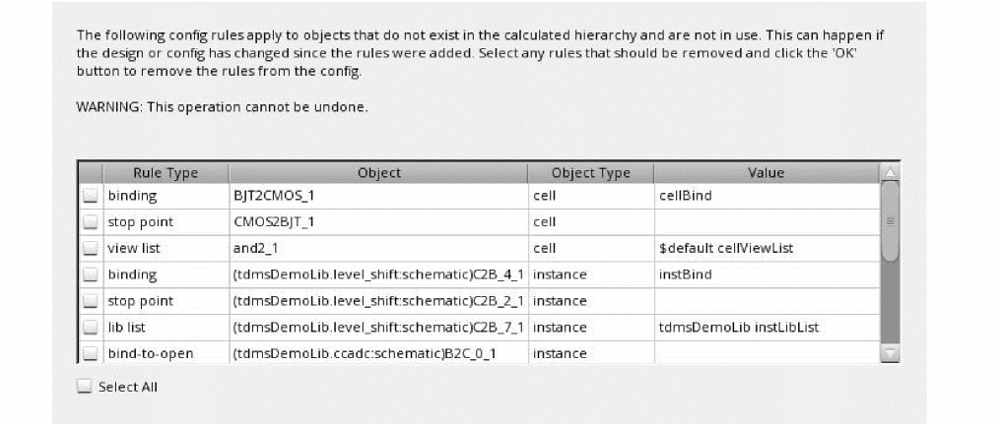

Customizing Hierarchy Editor Columns
The Hierarchy Editor lets you specify the columns you want to display, change the column order, and resize the columns.
Specifying the Columns to Display
You can select the columns you want to display from the Options form or from a pop-up menu.
To select columns from the pop-up menu,
-
Right-click the column heading.
For example, the following pop-up menu appears when right-clicking over the Cell Bindings table.The pop-up menu lists all the columns that can be displayed. Property columns appear in the list only if the View – Properties option is selected. Columns that are currently displayed have a check-mark next to them. -
Select the columns that you want to display and deselect the ones that you want to hide.
The tree view or table view display is updated to reflect your choices. These settings remain in effect for the session only unless you save your defaults.
The display/hide setting of individual property columns is not saved in the defaults file.
To specify columns in the Options form,
-
From the menu bar, choose View – Options.
The Options Form appears.
-
Click a tab to display a specific set of related attributes.
For example, to select the attributes you want to display in the tree structure, click the Tree tab. - Select the attributes you want to display. To select the default attributes, click Defaults.
- Click OK to apply your changes and close the form.
Checking for unused configurations
You can check for unused configuration rules using the Checks tab in the Options Form. These rules can be HDB configuration rules such as a binding, stop point, or inherited view list that is set on some cell, instance, or occurrence, which is not a part of the current elaborated hierarchy.
To perform check for unused configurations:
- Open Options – Check after opening a configuration in edit mode.
-
In the Editing a configuration section, select when the check should be performed – Open, Update, or Save.
The check runs for the selected operations and if unused rules are found then a dialog box appears with the list of unused rules.
 - Review and select the rules you want to delete from the configuration.
- Click OK.
Changing Column Order
You can change the order of the columns in the table view or tree view. For example, you can have the Cell column appear before the Library column.
Resizing Columns
You can change the width of any column by dragging the column heading.
- Place the cursor on the right border of the column heading till the double arrows appear.
- Drag the border to the right to make the column wider or drag it to the left to make it narrower.
When you resize a column, the right-most column is adjusted to accommodate the new size. The other columns are not resized.
Sorting Data
You can sort data in the cell or instance table by column.
-
Click the heading of the column by which you want to sort data. For example, to sort cells in the cell table by the views found, click the View Found column heading.
The column is sorted in alphabetical order. - Click the heading again to change the alphabetical order from ascending to descending or vice versa.
Related topics
Return to top